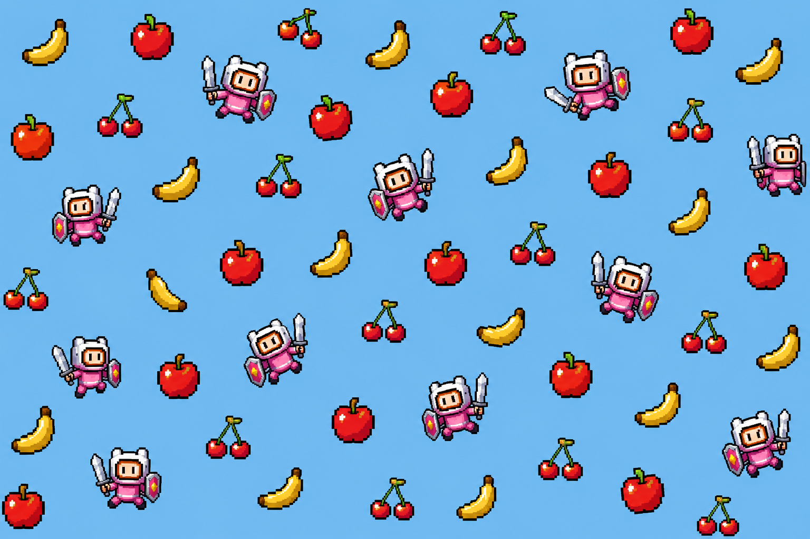

Un videojuego hecho con Godot por estudiantes

FruitQuest es un videojuego de plataformas donde tendrás que recoger frutas, superar niveles y evitar obstáculos.
Este proyecto ha sido creado con Godot como trabajo de desarrollo.
Salta y supera obstáculos.
Recoge frutas para completar niveles.
Desarrollado con el motor Godot.